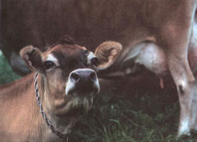

Animal Husbandry
Helping a hole heal in a sow's teat, suturing a cut milk vein in cattle, keeping a herd safe from rabies.
June/July 1992
Issue # 132 - June/July 1992
BARNYARD FIRST AID
by Dr. John Mettler, Jr., D.V.M
Summertime, and the animals are easy....
ON AN EARLY JUNE MORNING AS YOU leave the barn after milking and head for the house for breakfast, the whole world seems to be just right. The mare stands by her foal, head down as though asleep. Even the foal, belly full of milk, stretched out on its side, is dozing. The early morning sun warms your back as it reflects off the dew on the grass and flowers appear to be sprinkled with diamonds. The fragrance of the grass you cut for hay yesterday reaches your nose on the almost imperceptible breeze. A far off dove calling for a mate is the only sound, the other birds having already sung their "good morning," and commenced their search for food.
People who have not spent a large part of their lives getting out of bed before daylight to care for livestock don't seem to understand the pleasure in doing so. Perhaps it takes a "morning person" to appreciate this, or perhaps it is something one adapts to through life experience. Regardless of the reason, nothing can compare to the sights, sounds, and odors of a June morning, lifting one's spirit to heights seldom reached throughout the rest of the year.
Back in the days when country veterinarians spent more time trying to cure livestock ills than prevent them, the phone would almost stop ringing in early June. All too often when the phone did ring, it was because of a dire emergency. Even today too many part-time livestock farmers don't call a veterinarian to prevent disease in their family, waiting for illness to strike before making a call. Of course, even with the best-run disease-prevention program, injuries and accidents do happen, and some diseases such as rabies know no season. Some recent questions reflect this:
Last summer our family milk cow tried to crawl through a barbed-wire fence to reach her calf and tore a hole in one teat so deep that the milk ran out. The wound healed in a week or so, but milk still leaked out of the hole continually, particularly when we got the cow ready to milk. She will go dry next month-will the hole into the milk duct heal than, or is there anything I can do to help it heal?
When your cow is fully dry, with local anesthesia or perhaps the use of a tranquilizer, your veterinarian will be able to recut the outer skin and suture the wound. This looks easy, but requires much skill and patience. Antibiotics are usually infused into the repaired quarter, and your veterinarian may suggest you keep the cow in a clean, well-bedded stall instead of turning her to pasture where she may pull the stitches out on a bush or tall grass.
This type of wound can also be surgically repaired if attended to immediately after it happens. But the after care is much more difficult, involving milking the injured teat with a milk tube and maintaining absolute cleanliness. Since the injured quarter would need to be infused with antibiotics during the healing process, milk from all four quarters would have to be kept from human consumption. Still, it is worth a try, and if it doesn't heal, there is always a second chance at the dry period. Good luck!
Last spring, one of our two dairy cowscame in from pasture with blood literally streaming from the large milk vein under her belly. I held a cotton pack on it until a neighbor came to help. He put cobwebs on the cut, and the bleeding stopped. We turned her out that night, and the next morning I found her dead in a puddle of blood. What should I have done differently?
You started out fine by putting pressure on the wound, and holding it until you got help, but a cut milk vein will not hold unless stitched. I have seen some real farmer ingenuity in stopping the bleeding from cut milk veins temporarily. These include everything from diaper pins to large paper clips. Still, when a cow lies down again, the thick wall of the huge vein gives way and bleeding starts again. Unless you feel competent to stitch a cut milk vein, call your veterinarian. Even he or she will have a difficult time, but at least they have the proper instruments and suture material.
Last fall, I read that three cases of rabies had been diagnosed in white-tail deer in a northeastern state. I had always thought of rabies as a disease of dogs, cats, and wild creatures that bite, such as raccoon, foxes, and coyotes. In our area, deer come into the pasturewhere we have our own livestock. Can they spread rabies to our domestic animals, and how would I know if a cow, horse, or sheep had the disease? I can't imagine that they go around biting and snapping as a rabid dog does.
Rabies, a fatal disease in all animals, was known in the past as "hydrophobia," which means fear of water. The most evident symptom in an advanced case of the disease is the inability to swallow, due to painful spasms, and later paralysis of the the esophagus. In all species, symptoms in early cases vary so much that it is considered by most veterinary texts as one of the most difficult diseases to diagnose.
The first thing that you as a livestock or pet owner should understand is that there are two forms of the disease, commonly referred to as "furious," and "dumb." The furious cases, the animal extremely agitated, charging anything that moves, biting, chewing, and seemingly unafraid, are the ones that receive the most attention and are the most frightening. Dumb cases are really more dangerous to humans, since they attract little attention, and the animal may seem "just a little off" or "strange."
Although bites are the normal way the disease is spread, you should know that the saliva from an infected animal is the principal carrier of the virus causing the disease. It can enter your body through a break in the skin on your hand, or by getting into your eye. If rabies has been diagnosed in your area, any animal-wild or domestic-acting the least bit odd should be considered as a possible early case of the disease. Do not put your hands in such an animal's mouth. Most cases will turn out to be from something else, such as lead poisoning, nervous acetonemia, or listeriosis. As a livestock owner, you cannot ignore this. You need veterinary help, but you and your veterinarian are dealing with the possibility of a disease fatal to yourselves, and must be careful.
The classic dumb form of rabies is the dog who disappears for a day or two, then returns home acting either unusually affectionate or unfriendly. Its lower jaw droops or it just slobbers as though something is stuck in its throat or mouth. The admonishment given veterinary students years ago, "Beware of the dog with a bone in its throat," is still good advice for every person in an area where rabies has been reported.
Since cattle, sheep, goats, horses, and even hogs with rabies may chew on inedible things, or chew on hay and not be able to swallow, let's alter the warning to say, "Beware of any animal with something stuck in its mouth." Let's also add, "Beware of any wild creature that is not abnormally unafraid of you."
Theoretically, a rabid deer could infect your livestock; but more likely, a wandering rabid fox, coon, skunk, coyote, or dog would be the culprit. The classic rabies symptoms in the cow are weakness of the rear quarters, drooping tail, or tail pulled to one side, straining, staggering, bellowing, or attempting to bellow and resembling a yawn, chewing on wood or stall piping, slobbering, bloating as when choking, charging but seemingly not to see, going down, and finally death.
In sheep, symptoms are similar, but they do not bleat. Goats, too, have similar symptoms, but they do bleat. As an example of the difficulty in diagnosis, a baby goat eating one rhododendron leaf will have all of the above symptoms, and bleat a sad little sound that would break the heart of the most hardened person you know.
Horses with rabies may become agitated, even attack and bite, or they may be seen as lame. then act dull, stagger, and go down. Equine encephalomyelitits (sleeping sickness) comes to my mind as a disease very difficult to differentiate from dumb rabies in the live horse.
Pigs with rabies become agitated and will attack. Sows will show chomping motions, salivation and twitching of the nose. They will go down on their sides, and go through running motions with their legs. These symptoms are also seen in eclampsia and other diseases in sows.
The most frightening case of rabies to have contact with is in the domestic cat, or the wild squirrel. Being able to climb, either species with the furious form of rabies can invoke a reign of terror. Rabies in the squirrel is rare, or at least rarely seen, but cats with rabies are too frequent in rabies prone areas.
I have not experienced or been able to find anything on rabies in the llama. I would expect them to be in as much danger to the disease from getting bitten as any other pastured domestic animal. In a rabies prone area, any animal with nervous symptoms should be handled with care, and seen by a veterinarian familiar with the species involved. Watch MOTHER for more information on llamas.
Treatment of rabies is considered hopeless in all species including man. Diagnosis may only be made by laboratory tests using part of the suspected animal's brain. For accurate diagnosis, animals suspected of hav ing rabies should be allowed to die from the disease and their brain, or a portion of it, removed.
To prevent further pain and suffering of the sick animal and for the safety of humans and other animals, long-acting anesthetics and narcotics should be used until death occurs.
Local health officials should be notified of any suspected case of rabies, particularly if humans have been exposed. The easiest way to do this is to call your local veterinarian if he or she has not already been involved.
If you or anyone you are responsible for is bitten by an animal or has contact with the saliva from an animal that could have rabies, immediately wash with soap and lots of water.
If a bite wound is incurred, even if rabies is not suspected, it should be seen by a physician for evaluation and treatment. The animal that did the biting should, if at all possible, be confined and observed by a veterinarian for at least a week, to be sure that no rabies symptoms develop.
Rabies may be prevented in both humans and domestic animals by vaccination. Every area of the country, in fact the entire world, has different sets of circumstances as far as rabies is concerned. Only your veterinarian is qualified to recommend vaccination procedures for your animals that would be practical for your own situation.
Editor's Note: Please address anyguestions for Dr. John Mettler, Jr, D.V.M.toAnimal Husbandry, c/o M OTHER E ARTH N EWS , PO. Box 129, Arden, NC 28704
|
 |
 |
|